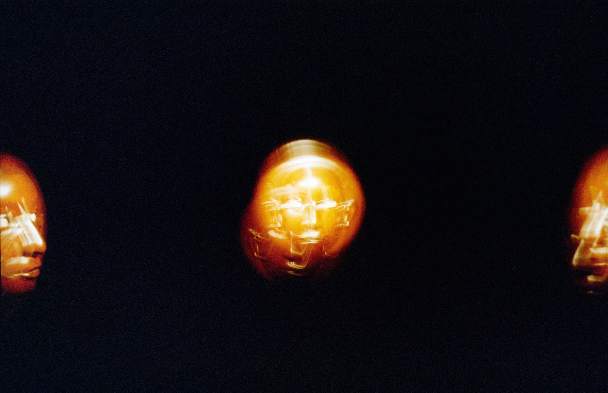
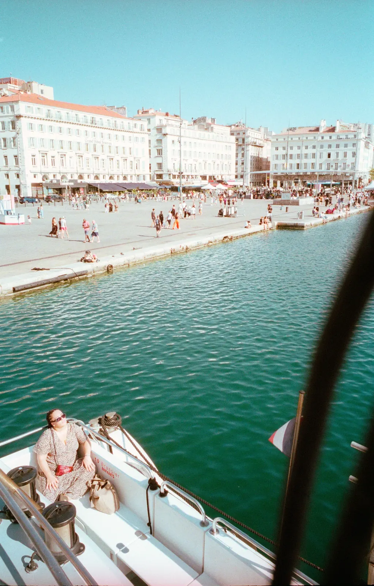
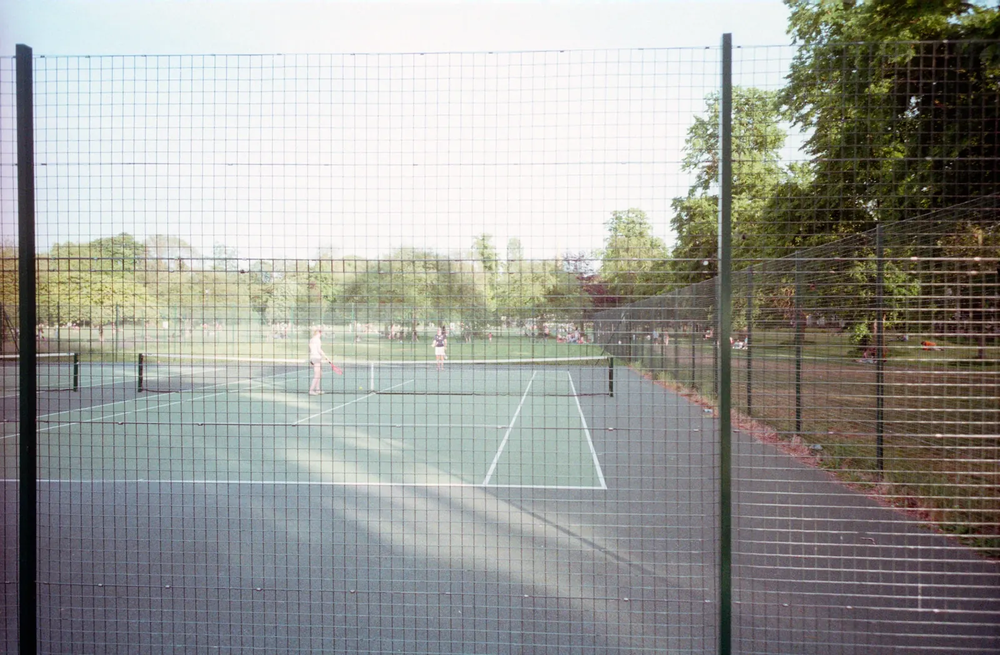
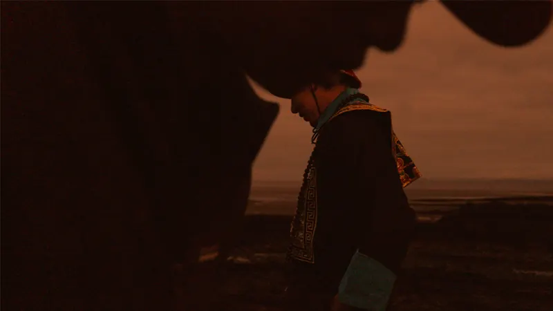
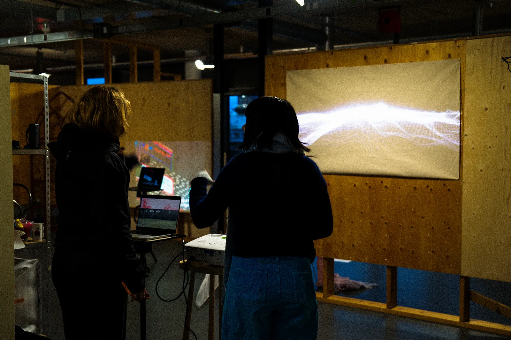

news
-

YI HUANGpresents新作进行中：东亚制造Confucian Silence · 数字媒介本体系列新章 -
 YI HUANGphotographs双年展Venice · 胶片摄影 34 张
YI HUANGphotographs双年展Venice · 胶片摄影 34 张 -
 YI HUANGphotographs摄影术二百年Arles · 胶片摄影 74 张
YI HUANGphotographs摄影术二百年Arles · 胶片摄影 74 张 -

YI HUANGphotographs晒后假日下Marseille · 胶片摄影 32 张 -
YI HUANGexhibits《洋务运动》亮相皇家艺术学院毕业展影像、陶瓷与装置 · RCA Degree Show, London
-

YI HUANGphotographs洋务时刻Cambridge · 胶片摄影 14 张 -
 YI HUANGscreens《关中往事》在莫名堂放映The Experience · 数字媒介本体系列 · 媒介历史分章
YI HUANGscreens《关中往事》在莫名堂放映The Experience · 数字媒介本体系列 · 媒介历史分章 -
 YI HUANGpresents《关中往事》入选第三十三届北京大学生电影节北京国际电影节 · 国际大学生原创影片单元
YI HUANGpresents《关中往事》入选第三十三届北京大学生电影节北京国际电影节 · 国际大学生原创影片单元 -

YI HUANGscreens《洋务运动》预告片放映As Fables Go By · Genius Cinema，映后公共讨论 -

YI HUANGexhibits《Passing By》亮相 RCA 中期展当代艺术实践专业 · Royal College of Art, London -
 YI HUANGpresents艺术的紧迫性工作坊《Barbican》· 与 David Stothard、David Leung 共同制作
YI HUANGpresents艺术的紧迫性工作坊《Barbican》· 与 David Stothard、David Leung 共同制作